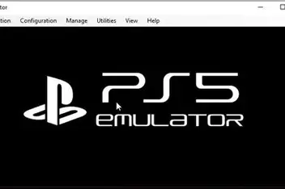

La emulación de la PlayStation 5 es un tema que ha generado mucho interés en la comunidad de jugadores y desarrolladores. La PS5 es una consola de última generación con un hardware avanzado, lo que hace que su emulación sea un desafío técnico significativo. A pesar de esto, algunos desarrolladores han logrado avances en la emulación de la PS5, aunque todavía hay limitaciones en términos de rendimiento y compatibilidad con ciertos juegos.
En el 2020, la PlayStation 5 fue lanzada al mercado con gran expectación, ofreciendo mejoras significativas en gráficos, velocidad de carga y rendimiento en comparación con su predecesora, la PS4. Sin embargo, la emulación de esta consola ha sido un tema controvertido debido a los desafíos técnicos y legales que implica. Su CIO afirmó que la PS5 fue diseñada con medidas de seguridad avanzadas para prevenir la piratería y proteger los derechos de autor de los desarrolladores de juegos y duro 4 años sin que los hackers pudieran vulnerarla para ponerle juegos piratas.Pero en el 2024 un hacker ruso filtro en la red social reddit un metodo para entrar al navegador y asi llegar a un sitio web que el treo para poder liberar por copleto el sistema de la play y asi poder ponerle juegos piratas.

Ya en el 2026, sony publico un comunicado oficial en el que afirmaba que en el 2028 dejaria de producir los vidiojuegos fisicos para las consolas y a demas que a finales de agosto los juegos digitales subirian un 20% y como no renovaron contratos con algunos servicios como peliculas, las cuales ya habias pagado podian desaparecer sin motivos algunos lo mismo para los videojuegos digitales y asi los juegos que habias comprado podian desaparecer de tu consola y no podias hacer nada para recuperarlos. Por lo tanto algunas comunidades se unieron para tratar de que las personas dejaran de conprar cosas a sony y ahi mismo aparecio un hacker el cual logro filtrar las llaves que usaba las consolas para evitar la pirateria, con esto unos brasileños se unieron y crearon el primer emulador de ps5 totalmente gratis y sin ningun tipo de restriccion, y asi poder jugar los juegos que habias comprado en tu consola y que ya no podias jugar por que sony los habia eliminado de tu consola.